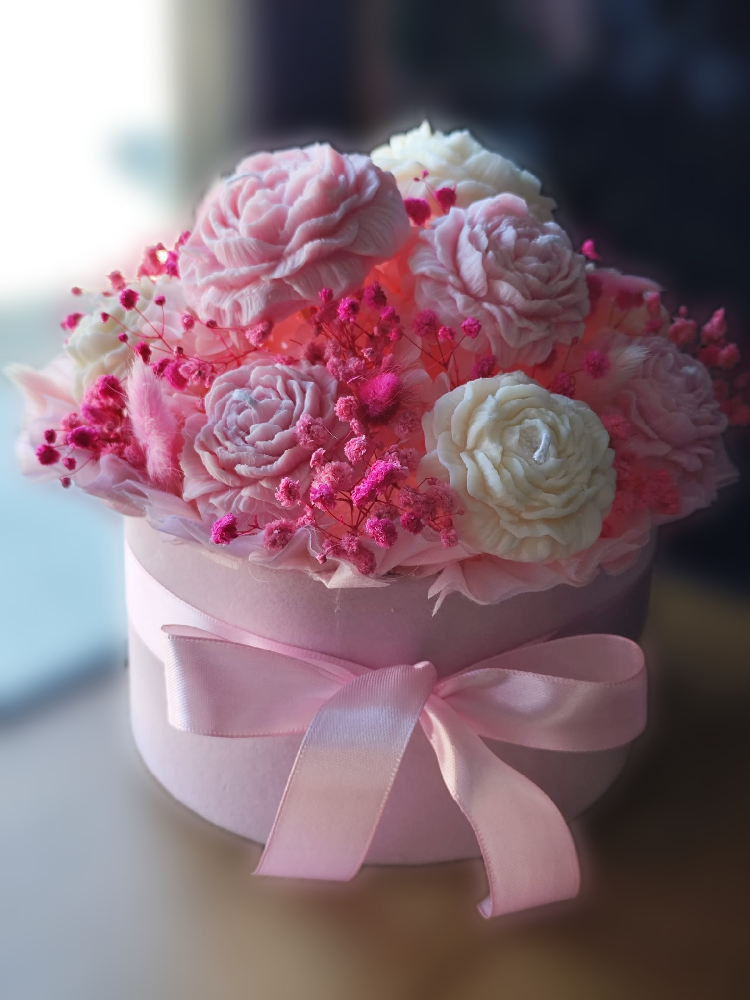
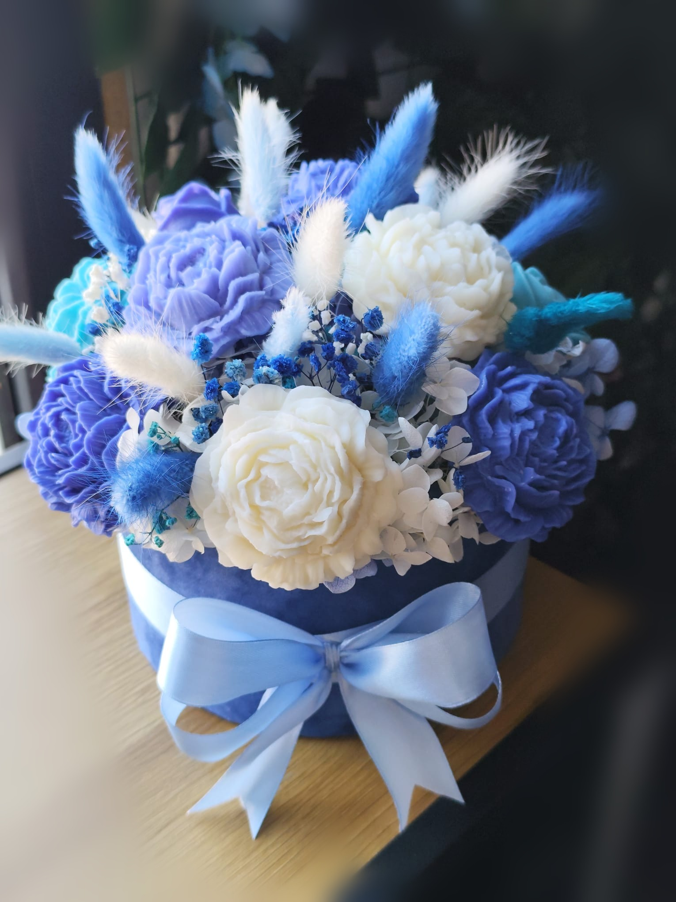
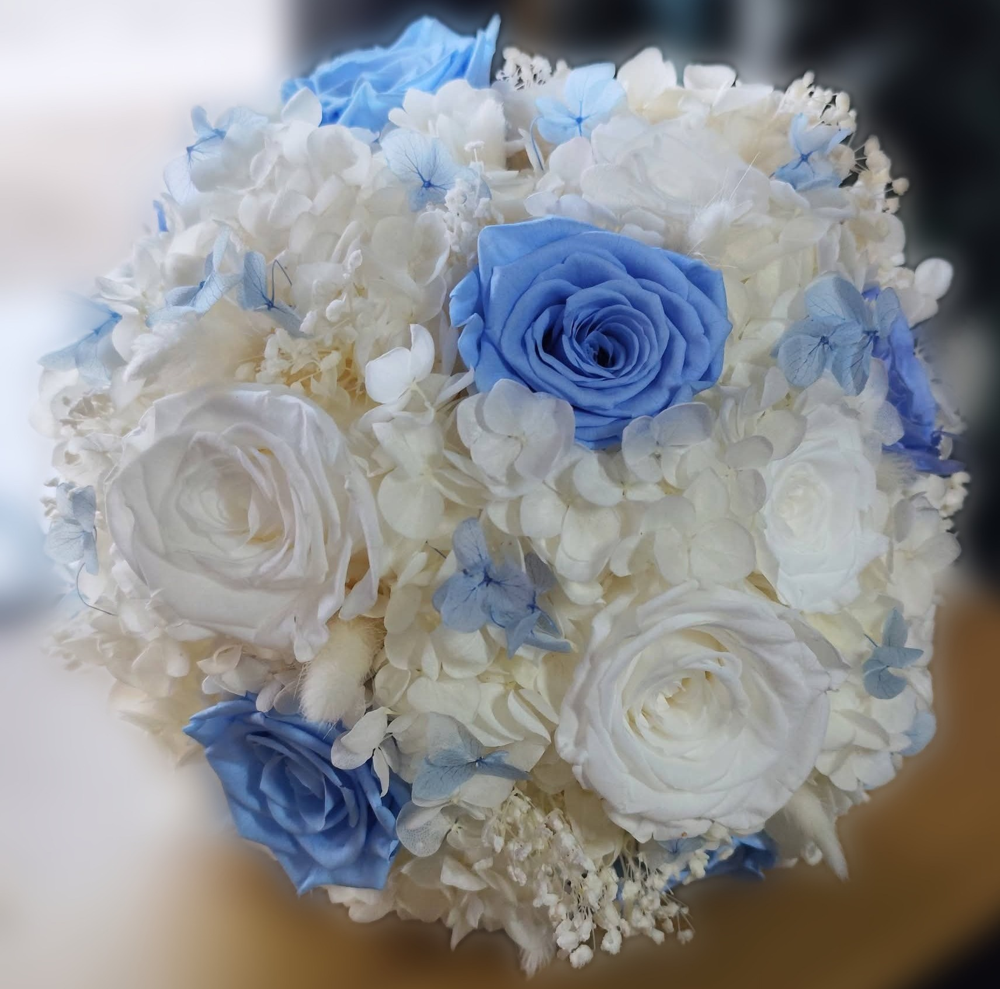
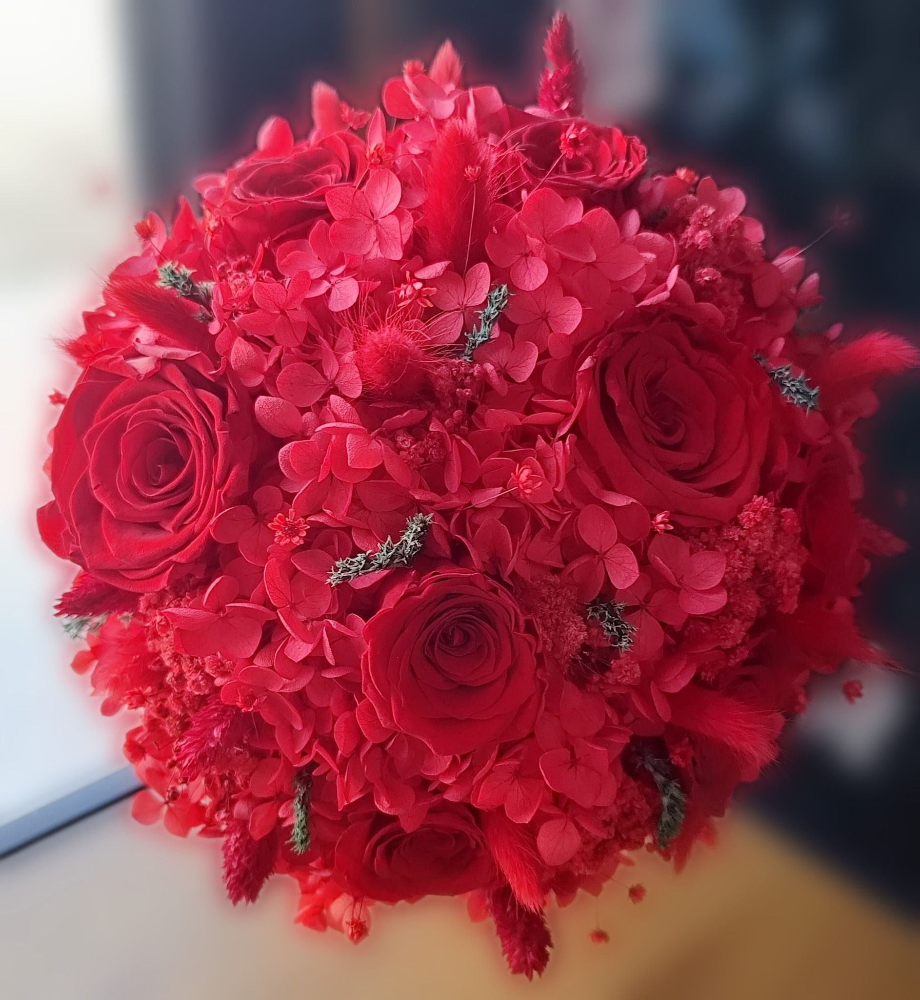

Cadouri cu suflet
Cutii florale, buchete delicate și aranjamente pregătite pentru a face o surpriză personală, fără să fie nevoie de multe cuvinte.
FLORI CARE SPUN O POVESTE
Petale din Vis este un mic colț floral în care fiecare buchet este creat cu răbdare, emoție și multă culoare. Pentru zile de naștere, mulțumiri, surprize sau pur și simplu pentru o zi care merită să fie mai frumoasă.


DESPRE PETALE DIN VIS
Credem în buchete simple, naturale și pline de personalitate. Alegem flori proaspete și le așezăm împreună ca să marcheze un gând bun, o aniversare sau pur și simplu o zi obișnuită care merită celebrată.
Fiecare aranjament este pregătit cu atenție, pentru ca gestul tău să ajungă exact așa cum l-ai imaginat.
Lucrăm cu nuanțe delicate, texturi surprinzătoare și mici detalii care transformă un buchet într-un cadou memorabil.
DETALII CARE ÎNFLORESC
Flori atent combinate, culori care se completează și forme create pentru a fi oferite cu drag.


PENTRU MICI ȘI MARI MOMENTE
Uneori marchează o zi importantă. Alteori este doar felul nostru preferat de a spune „m-am gândit la tine”. La Petale din Vis, florile devin parte din povestea ta.
Cutii florale, buchete delicate și aranjamente pregătite pentru a face o surpriză personală, fără să fie nevoie de multe cuvinte.
Pentru aniversări, onomastici sau începuturi noi, alegem culori care aduc energie și detalii care rămân în amintire.
Florile nu au nevoie de o ocazie. Uneori, o masă mai luminoasă și o dimineață mai frumoasă sunt motivul perfect.
CUM PRINDE VIAȚĂ UN BUCHET
Ne spui pentru cine este și ce fel de emoție vrei să transmiți. Noi alegem culorile, formele și micile accente care se potrivesc momentului.
Înainte să plece mai departe, fiecare aranjament este verificat, împachetat cu grijă și pregătit să aducă un zâmbet.
PĂSTRĂM LEGĂTURA